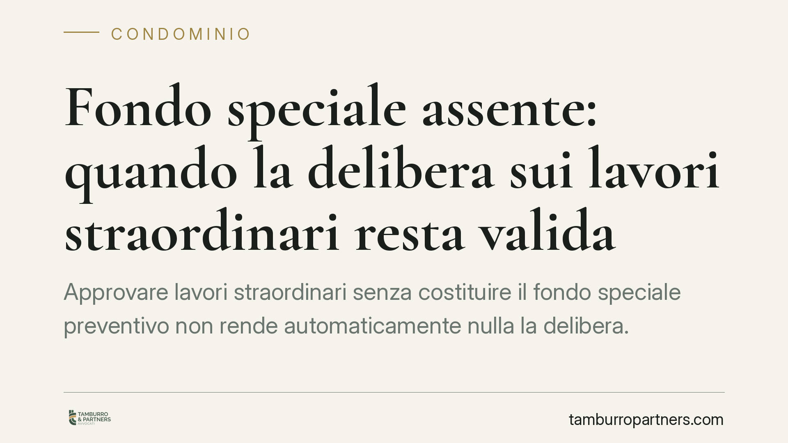

Fondo speciale assente: quando la delibera sui lavori straordinari resta valida
Approvare lavori straordinari senza costituire il fondo speciale preventivo non rende automaticamente nulla la delibera. Lo precisa il Tribunale di Arezzo: il vizio comporta al più l'annullabilità e, se l'impresa è stata interamente pagata a opera conclusa, la decisione resta valida per mancanza di un danno concreto ai condòmini. Una lettura che ridimensiona un'eccezione spesso usata in giudizio.

Il caso
Una condomina impugnava la delibera assembleare con cui erano stati approvati lavori di manutenzione straordinaria. Il motivo: l'assemblea non aveva costituito il fondo speciale preventivo di importo pari all'ammontare dei lavori, come richiesto dalla legge. Secondo l'impugnante, questa omissione rendeva la delibera nulla.
Il Tribunale di Arezzo, con la sentenza n. 317/2026, respinge l'impostazione. Il vizio esiste, ma non travolge in radice la decisione: produce al più l'annullabilità. E poiché l'impresa era stata interamente pagata a lavori conclusi, non si è prodotto alcun danno concreto per i condòmini. La delibera, quindi, resta valida.
Inquadramento normativo
L'art. 1135, comma 1, n. 4, del Codice civile prevede che l'assemblea, quando dispone opere di manutenzione straordinaria e innovazioni, costituisca un fondo speciale di importo pari all'ammontare dei lavori. Se i lavori devono essere eseguiti in base a un contratto che ne prevede il pagamento graduale in funzione dello stato di avanzamento, il fondo può essere costituito in relazione ai singoli pagamenti dovuti.
La funzione della norma è di garanzia: assicurare la copertura finanziaria dell'opera e tutelare sia l'impresa (che vede provvista la spesa) sia i condòmini (che evitano di restare esposti verso l'appaltatore per quote non versate da altri).
Il punto controverso è la conseguenza dell'omessa costituzione del fondo. La giurisprudenza distingue da tempo tra nullità e annullabilità delle delibere condominiali. Sono nulle quelle prive degli elementi essenziali, con oggetto impossibile o illecito, o che incidono su diritti individuali indisponibili. Sono invece annullabili quelle affette da vizi procedurali o che violano norme poste a tutela di interessi disponibili. La differenza non è formale: la nullità è rilevabile da chiunque, senza termini; l'annullabilità va fatta valere dal condomino dissenziente o assente entro trenta giorni (art. 1137 c.c.).
Implicazioni pratiche
La decisione di Arezzo si inserisce in questa linea: l'omessa o incompleta costituzione del fondo è un vizio procedurale, non un difetto strutturale. Di conseguenza va contestata nei termini e, soprattutto, richiede la prova di un pregiudizio effettivo.
Per il condomino che intende impugnare, questo significa due cose. Primo: il termine di trenta giorni è perentorio. Lasciarlo scadere consolida la delibera, per quanto viziata. Secondo: non basta denunciare l'irregolarità formale. Se i lavori sono stati eseguiti e l'impresa pagata, il giudice tende a escludere l'interesse ad agire, perché manca un danno concreto da rimuovere.
Per l'amministratore e per l'assemblea, la pronuncia non è un via libera. Costituire il fondo resta un obbligo di legge e la sua omissione espone a responsabilità, oltre che al rischio di impugnazioni tempestive. La sentenza conferma solo che l'irregolarità, se non produce danno e non viene contestata nei termini, non manda retroattivamente all'aria la spesa già sostenuta.
Resta da valutare caso per caso. Se il fondo manca e un condomino moroso non versa la propria quota, il pregiudizio per gli altri partecipanti può diventare attuale: in quello scenario l'esito di un'eventuale impugnazione potrebbe essere diverso.
Cosa fare in concreto
- Costituisci sempre il fondo speciale prima di avviare lavori straordinari: è un obbligo dell'art. 1135 c.c., non una formalità rinunciabile.
- Verbalizza con precisione l'importo del fondo e, se i pagamenti sono graduali, collegalo agli stati di avanzamento lavori.
- Se sei condomino dissenziente, impugna entro trenta giorni: oltre quel termine il vizio procedurale non è più contestabile.
- Valuta l'interesse ad agire prima di promuovere la causa: se i lavori sono conclusi e l'impresa è stata pagata, l'impugnazione rischia il rigetto per assenza di danno.
- Conserva la documentazione su pagamenti e quote versate: è decisiva per dimostrare l'esistenza o l'assenza di un pregiudizio concreto.
Disclaimer
Contributo informativo a cura di Tamburro & Partners - Avv. Giuseppe Tamburro. Non costituisce parere legale.
Ogni condominio ha una storia a sé.
Se gestisci un'amministrazione e vuoi un confronto su una specifica questione condominiale, scrivi allo studio. Ti rispondiamo entro un giorno lavorativo.